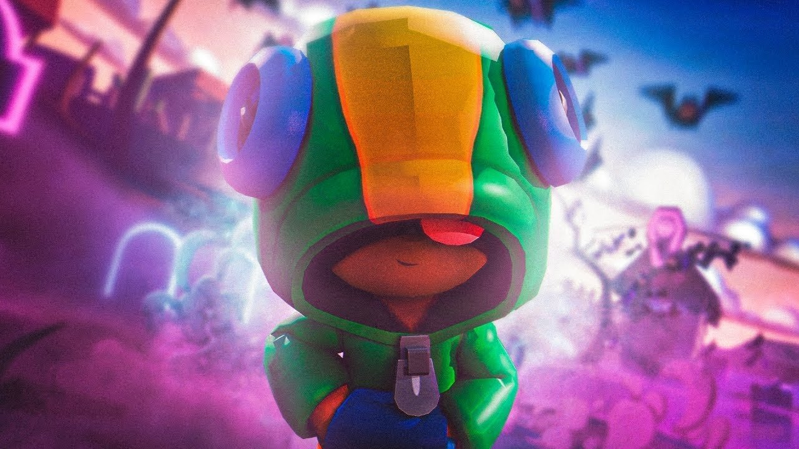
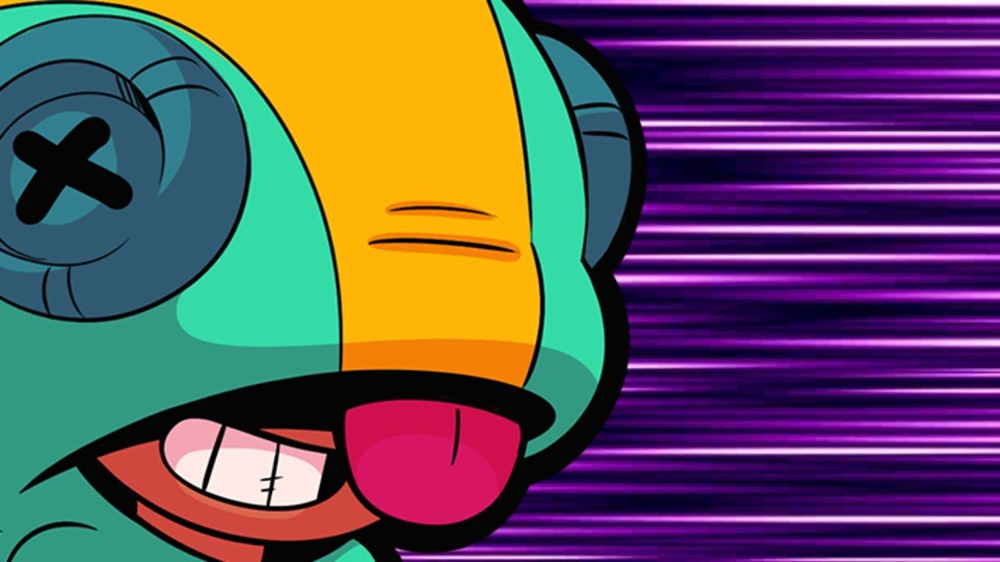
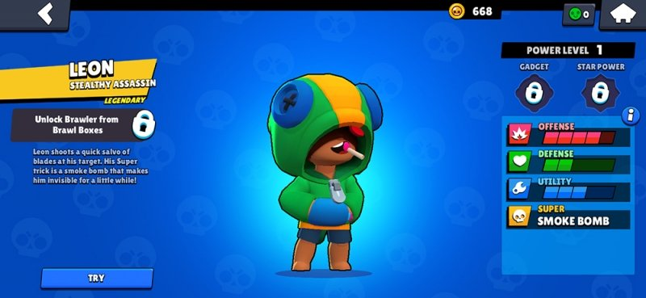
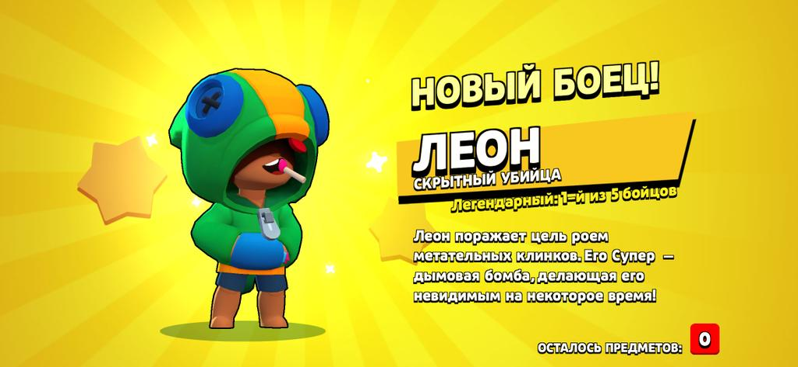

В чем сила, брат?   
- В Леоне...
Леон
История Леона
Leon – племянник Бо и двоюродный братец Ниты. Он родом из индейского племени, все члены которого умеют повелевать силами животных. Наш герой умеет становиться скрытным как хамелеон, «кусаться» сюрикенами как акульими зубами, быть быстрым словно дикий волк и при этом оставаться невероятно милым «утенком».
Как выглядит Леон из Бравл Старс
Леон относится к племени индейцев, умеющих управлять животными. Поэтому все его скины связаны с разными зверюшками — акулой, волком, уткой. По умолчанию при первом выбивании героя из ящика (или покупке в магазине), он одет в костюм хамелеона (ведь его Супер — невидимость) с закрытым лицом. Без капюшона Leon пока никому не показывался.
Как играть за Леона
Лучшая тактика для персонажа с подобной атакой и средним здоровьем: держаться от сильных бойцов на среднем расстоянии и подходить к ним только при активации Супера. Слишком далеко от противников бегать бесполезно (сюрикены достанут, но серьезного урона не нанесут).
Как выбить Леона в Brawl Stars
Секретный способ, как повысить вероятность выпадения Леона в любом ящике: протестируйте открытых у вас персонажей (любых, не обязательно легендарных). Для этого надо нажать на героя и выбрать «Испытать». Сразу после каждого теста надо открывать по 3 ящика. Не получилось – тестируйте следующего бойца и снова вскрывайте 3 бокса. С вероятностью 80% там окажется Leon и вам наконец-то получится добыть этого перса.
Плюсы Леона
- Это один из самых быстрых персонажей Brawl Stars.
- Если другие борцы могут подкрадываться только в высокой траве, то Леон может активировать Супер и подходить незаметно даже на открытой площадке.
- Уже с 5 уровня прокачки персонаж считается сильным.
- Отличная пассивка (ускорение в Звездной силе).
- Вполне способен тащить игру без напарников.
Минусы Леона
- Средненький показатель здоровья, поэтому без использования Супера и Звездной силы, Леон уязвим.
- Слабый урон при ударе с близкого расстояния.